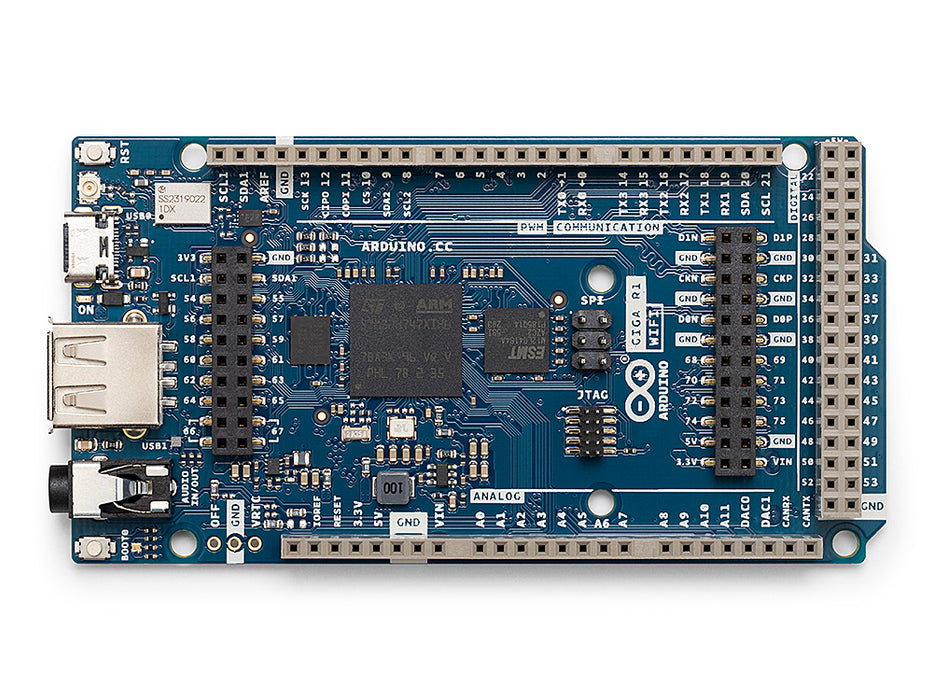
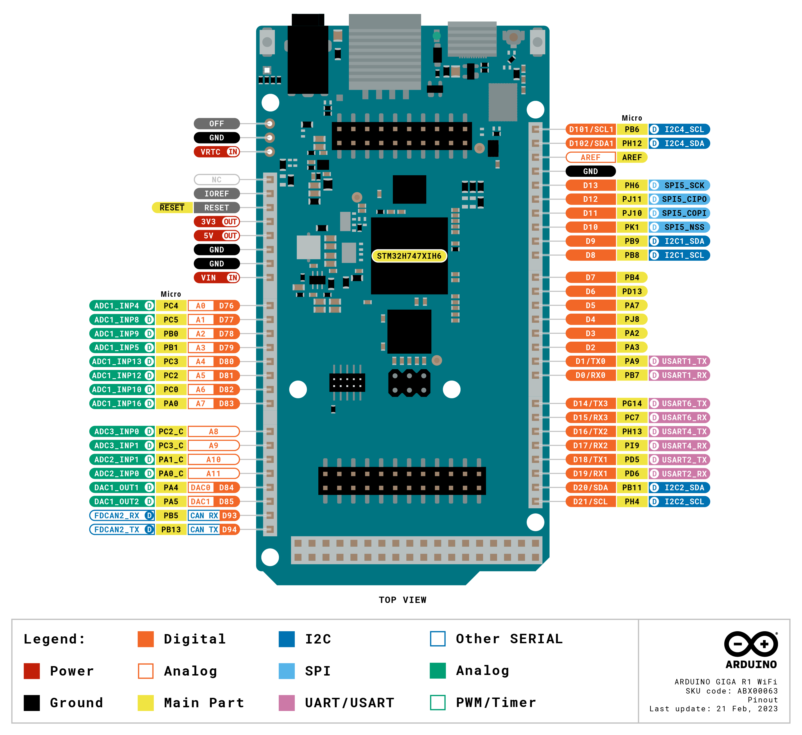

Arduino Giga R1 WiFi¶
Arduino Giga R1 WiFi 是一塊 101 × 53 mm 的 Mega 規格主機板，以 STMicroelectronics STM32H747XI 為核心建構——這是一顆雙核心 SoC，結合了運行於 480 MHz 的 Cortex‑M7 與運行於 240 MHz 的 Cortex‑M4。OpenMV 韌體完全運行於 M7 核心上。Giga 在標準的 Arduino Mega 排針配置之上，增加了一個 22 接腳的 Arducam 相機軟排線連接器、一個用於 Arduino Giga Display Shield 的 MIPI‑DSI 連接器，以及一個 3.5 mm 立體聲音訊插孔。
{kind=link}

如需完整的規格書、照片與尺寸資訊，請參閱 Arduino Giga R1 WiFi 產品頁面。
重點特色¶
STMicroelectronics STM32H747XI 雙核心 Cortex‑M7（480 MHz）+ Cortex‑M4（240 MHz）。OpenMV 韌體僅運行於 M7 核心上；M4 核心透過 openamp 對外提供，用於處理器間通訊。
8 MB 外部 SDRAM 外加 2 MB 內部 flash 以及 16 MB 外部 QSPI flash。
硬體 JPEG 編碼器／解碼器。
22 接腳 Arducam 相容相機軟排線連接器（
J6）——驅動程式支援 OV5640（5MP）、OV7670、GC2145、HM01B0 與 HM0360 感測器模組。MIPI‑DSI 顯示器連接器（
J5）用於 Arduino Giga Display Shield（480×800 電容式觸控面板），並附帶一個供進階載板使用的 LTDC RGB 顯示引擎。3.5 mm 音訊插孔，具備立體聲 line‑out 與麥克風輸入。
Wi‑Fi b/g/n（2.4 GHz）+ Bluetooth LE 5.1，透過 Murata 1DX（CYW4343W）模組提供——經由板載 U.FL 連接器 連接至隨附的天線。
USB‑C（全速）用於供電／序列通訊／燒錄。
使用者 I/O 位於 Mega 樣式排針上——
D0–D75（數位）、A0–A11（類比）、DAC0/DAC1（DAC 輸出）、CAN_RX/CAN_TX（FDCAN2），以及內排的SDA1/SCL1I²C 接腳對。主機板正面另有一個獨立的 6 接腳 SPI1 排針，引出CIPO/COPI/SCK（D89/D90/D91）。JTAG / SWD 引出於頂面除錯排針上，供進階除錯使用。
接腳配置圖¶
{kind=link}

接腳參考¶
Arduino Mega 樣式排針引出 76 個數位接腳（D0–D75）、12 個類比接腳（A0–A11）、兩個 DAC 輸出（DAC0/DAC1）、一組次要 I²C 接腳對（SDA1/SCL1），以及一組 FDCAN2 接腳對（CAN_RX/CAN_TX）。主機板正面另有一個獨立的 6 接腳 SPI1 排針，引出 CIPO/COPI/SCK（D89/D90/D91）。
接腳名稱 |
參考 |
功能 |
|---|---|---|
D0 |
3.3 V |
USART1 RX (Serial1) / TIM4 CH2 |
D1 |
3.3 V |
USART1 TX (Serial1) / TIM1 CH2 |
D2 |
3.3 V |
TIM2 CH4 / TIM5 CH4 / USART2 RX |
D3 |
3.3 V |
TIM2 CH3 / TIM5 CH3 / USART2 TX |
D4 |
3.3 V |
TIM8 CH1 / UART8 TX |
D5 |
3.3 V |
TIM3 CH2 / SPI1 MOSI / SPI6 MOSI |
D6 |
3.3 V |
TIM4 CH2 |
D7 |
3.3 V |
TIM3 CH1 / SPI1 MISO / SPI3 MISO / SPI6 MISO |
D8 |
3.3 V |
TIM4 CH3 / I2C1 SCL / I2C4 SCL / UART4 RX |
D9 |
3.3 V |
TIM4 CH4 / I2C1 SDA / I2C4 SDA / UART4 TX |
D10 |
3.3 V |
TIM1 CH1 / TIM8 CH3N |
D11 |
3.3 V |
TIM8 CH2 / SPI5 MOSI |
D12 |
3.3 V |
TIM8 CH2N / SPI5 MISO |
D13 |
3.3 V |
TIM12 CH1 / SPI5 SCK |
D14 |
3.3 V |
USART6 TX (Serial2) / SPI6 MOSI |
D15 |
3.3 V |
USART6 RX (Serial2) / TIM3 CH2 / TIM8 CH2 |
D16 |
3.3 V |
UART4 TX (Serial3) / TIM8 CH1N |
D17 |
3.3 V |
UART4 RX (Serial3) |
D18 |
3.3 V |
USART2 TX (Serial4) |
D19 |
3.3 V |
USART2 RX (Serial4) / SPI3 MOSI |
D20 |
3.3 V |
I2C2 SDA / TIM2 CH4 / USART3 RX |
D21 |
3.3 V |
I2C2 SCL |
D22 |
3.3 V |
GPIO |
D23 |
3.3 V |
GPIO / SPI6 SCK |
D24 |
3.3 V |
GPIO / SPI6 MISO |
D25 |
3.3 V |
GPIO |
D26 |
3.3 V |
GPIO |
D27 |
3.3 V |
GPIO |
D28 |
3.3 V |
GPIO |
D29 |
3.3 V |
GPIO |
D30 |
3.3 V |
GPIO |
D31 |
3.3 V |
GPIO |
D32 |
3.3 V |
GPIO |
D33 |
3.3 V |
GPIO |
D34 |
3.3 V |
GPIO |
D35 |
3.3 V |
GPIO |
D36 |
3.3 V |
GPIO |
D37 |
3.3 V |
TIM8 CH2 |
D38 |
3.3 V |
TIM8 CH2N |
D39 |
3.3 V |
GPIO |
D40 |
3.3 V |
TIM15 CH2 / SPI4 MOSI |
D41 |
3.3 V |
GPIO |
D42 |
3.3 V |
GPIO |
D43 |
3.3 V |
GPIO |
D44 |
3.3 V |
GPIO |
D45 |
3.3 V |
GPIO |
D46 |
3.3 V |
TIM8 CH3N |
D47 |
3.3 V |
SPI3 MOSI |
D48 |
3.3 V |
TIM8 CH3 / SPI5 SCK |
D49 |
3.3 V |
GPIO |
D50 |
3.3 V |
GPIO |
D51 |
3.3 V |
TIM15 CH1 / SPI4 MISO |
D52 |
3.3 V |
GPIO |
D53 |
3.3 V |
GPIO |
D54 |
3.3 V |
TIM8 CH1（相機 DCMI VSYNC） |
D55 |
3.3 V |
I2C3 SDA（相機 DCMI HSYNC） |
D56 |
3.3 V |
TIM3 CH1 / TIM13 CH1（相機 DCMI PXCLK） |
D57 |
3.3 V |
TIM8 CH1N / UART8 RX（相機主時脈——TIM1 CH3） |
D58 |
3.3 V |
TIM8 CH3（相機 DCMI D7） |
D59 |
3.3 V |
TIM8 CH2（相機 DCMI D6） |
D60 |
3.3 V |
GPIO（相機 DCMI D5） |
D61 |
3.3 V |
TIM8 CH2N / UART4 RX（相機 DCMI D4） |
D62 |
3.3 V |
SPI1 SCK（相機 DCMI D3） |
D63 |
3.3 V |
TIM5 CH2 / I2C4 SCL（顯示器 I²C） |
D64 |
3.3 V |
TIM5 CH1（相機 DCMI D1） |
D65 |
3.3 V |
TIM12 CH2（相機 DCMI D0） |
D66 |
3.3 V |
GPIO（相機 reset——相機作用時被占用） |
D67 |
3.3 V |
GPIO（相機 power‑down——相機作用時被占用） |
D68 |
3.3 V |
TIM3 CH1 / TIM8 CH1 / USART6 TX（Display Shield DSI RESET） |
D69 |
3.3 V |
TIM5 CH4（Display Shield DSI TE） |
D70 |
3.3 V |
SPI2 SCK |
D71 |
3.3 V |
TIM8 CH4 / SPI2 MISO |
D72 |
3.3 V |
SPI2 MOSI |
D73 |
3.3 V |
ADC123 IN11（Display Shield DFSDM 麥克風資料） |
D74 |
3.3 V |
GPIO（顯示器背光——被 Giga Display Shield 占用） |
D75 |
3.3 V |
SPI2 SCK（Display Shield DFSDM 麥克風時脈） |
A0 / D76 |
3.3 V |
ADC12 IN4 |
A1 / D77 |
3.3 V |
ADC12 IN8 |
A2 / D78 |
3.3 V |
ADC12 IN9 / TIM3 CH3 / TIM8 CH2N |
A3 / D79 |
3.3 V |
ADC12 IN5 / TIM3 CH4 / TIM8 CH3N |
A4 / D80 |
3.3 V |
ADC12 IN13 / SPI2 MOSI |
A5 / D81 |
3.3 V |
ADC123 IN12 / SPI2 MISO |
A6 / D82 |
3.3 V |
ADC123 IN10 |
A7 / D83 |
3.3 V |
ADC1 IN16 / TIM2 CH1 / TIM5 CH1（音訊插孔麥克風輸入） |
A8 |
3.3 V |
ADC3 IN0（僅類比） |
A9 |
3.3 V |
ADC3 IN1（僅類比） |
A10 |
3.3 V |
ADC12 IN1（僅類比） |
A11 |
3.3 V |
ADC12 IN0（僅類比） |
DAC0 / A12 / D84 |
3.3 V |
DAC1 OUT1 / ADC12 IN18（音訊插孔 line‑out L） |
DAC1 / A13 / D85 |
3.3 V |
DAC1 OUT2 / TIM2 CH1 / SPI1 SCK / ADC12 IN19（音訊插孔 line‑out R） |
D89 |
3.3 V |
SPI1 MISO（正面 SPI 排針上的 |
D90 |
3.3 V |
SPI1 MOSI（正面 SPI 排針上的 |
D91 |
3.3 V |
SPI1 SCK（正面 SPI 排針上的 |
CAN_RX / D93 |
3.3 V |
FDCAN2 RX / TIM3 CH2 / UART5 RX |
CAN_TX / D94 |
3.3 V |
FDCAN2 TX / SPI2 SCK / UART5 TX |
SDA1 / D102 |
3.3 V |
I2C4 SDA（顯示器觸控／相機控制匯流排） |
SCL1 / D101 |
3.3 V |
I2C4 SCL（顯示器觸控／相機控制匯流排） |
RESET |
3.3 V |
按下板載 RESET 按鈕或拉至 GND 以重置 |
LED_RED |
3.3 V |
RGB LED 紅色通道（低電位有效） |
LED_GREEN |
3.3 V |
RGB LED 綠色通道（低電位有效） |
LED_BLUE |
3.3 V |
RGB LED 藍色通道（低電位有效） |
備註
A8–A11 是 STM32H747 的 _C 接腳上的 僅類比 焊盤——它們沒有 GPIO 功能，只能透過 ADC 讀取。
電源接腳¶
Mega 排針接腳：
VIN —— 6–32 V 輸入。透過板載降壓穩壓器為主機板供電。
+5V —— 由 USB 經二極體供電，或由板載降壓穩壓器供電的 5 V 電軌。
+3V3 —— 主要的 3.3 V 電軌。
IOREF —— 反映主機板的 I/O 電壓（3.3 V）。
AREF —— ADC 接腳的類比電壓參考。預設為 3.3 V；可由外部驅動以使用不同的參考電壓。
OFF —— 拉至 GND 以關閉 +3.3 V 電軌並使系統關機。
VRTC —— 3.0 V 鈕扣電池輸入（最高 3.3 V），在主機板其餘部分關機時，仍能保持晶片內 RTC 運行。
GND —— 共同接地。
Giga R1 可透過下列任一路徑供電：
USB‑C —— 為板載降壓穩壓器提供 5 V。
VIN 接腳 —— 直接輸入經穩壓的 6–32 V 電源。
小訣竅
使用 電池續航力估算器 來推估在給定的作用／深度睡眠占空比下，Giga R1 以電池供電可運行多久。
復原與除錯接腳¶
RESET —— 同時以電源排針上的引出接腳與主機板頂部的瞬時開關形式存在，兩者皆連接至 SoC 的 NRST 線。拉至 GND 或按下按鈕即可重置。
Giga R1 採用 Arduino 標準的 雙擊重置 來進入 Arduino 的 bootloader。快速按下 RESET 按鈕兩次——主機板便會以 DFU 裝置的形式透過 USB 重新列舉，OpenMV IDE 即可燒錄新的韌體映像檔。
如果 bootloader 完全遺失，可在按下 RESET 的同時按住 BOOT0 按鈕，強制 SoC 進入 ROM bootloader 模式。
STM32 的 SWD 訊號引出於主機板正面的 10 接腳 1.27 mm Cortex Debug 排針 上。可透過 SEGGER J‑Link、ST‑Link 或任何標準的 ARM JTAG/SWD 探針連接。所有除錯訊號皆以 3.3 V 為參考電位。
板載周邊裝置¶
LED¶
Giga R1 具有一顆使用者 RGB LED，可透過 machine.LED 以軟體控制：：
from machine import LED
LED("LED_RED").on()
LED("LED_GREEN").on()
LED("LED_BLUE").on()
主機板上另有一顆獨立的 電源 LED，只要 +3.3 V 電軌啟動就會亮起，使用者無法控制。
相機連接器（J6）¶
J6 是一個 22 接腳的 Arducam 相容相機軟排線連接器。插入任一受支援的感測器模組後，韌體便會透過 csi --- 相機感測器 模組自動探測它們：：
import csi
cam = csi.CSI()
cam.reset()
cam.pixformat(csi.RGB565)
cam.framesize(csi.QVGA)
cam.snapshot(time=2000) # let auto‑exposure settle
while True:
img = cam.snapshot()
受支援的感測器：
OV5640 —— 5 MP 彩色，最高可達 QSXGA（2592 × 1944）。
OV7670 —— 0.3 MP 彩色，最高可達 VGA（640 × 480）。
GC2145 —— 2 MP 彩色，最高可達 UXGA（1600 × 1200）。
HM01B0 —— 320 × 320 單色。
HM0360 —— VGA（640 × 480）單色。
警告
相機初始化後，下列 Mega 排針接腳會被韌體占用，無法使用：
接腳 |
原因 |
|---|---|
|
相機軟排線連接器上的 DCMI 資料 + 同步訊號 |
|
TIM1 CH3 —— 相機主時脈 |
|
相機 reset GPIO |
|
相機 power‑down GPIO |
|
I²C 4 —— 與相機共用；匯流排可用，但須避開感測器的 I²C 位址 |
機器學習¶
ml --- 機器學習 使用 CMSIS‑NN 核心在 Cortex‑M7 上運行量化過的 TFLite 模型——足夠快到能讓精簡型偵測器達到每秒數幀。位於唯讀 /rom 檔案系統上的模型可直接從 flash 載入，無需複製到 RAM。以下是一個 128×128 的 BlazeFace 偵測器，在每一影格上疊加所偵測到的臉部及其六個關鍵點：：
import csi
import time
import ml
from ml.postprocessing.mediapipe import BlazeFace
# Initialize the sensor.
csi0 = csi.CSI()
csi0.reset()
csi0.pixformat(csi.RGB565)
csi0.framesize(csi.VGA)
csi0.window((400, 400))
# Load built-in face detection model
model = ml.Model("/rom/blazeface_front_128.tflite", postprocess=BlazeFace(threshold=0.4))
print(model)
clock = time.clock()
while True:
clock.tick()
img = csi0.snapshot()
for r, score, keypoints in model.predict([img]):
ml.utils.draw_predictions(img, [r], ("face",), ((0, 0, 255),), format=None)
ml.utils.draw_keypoints(img, keypoints, color=(255, 0, 0))
print(clock.fps(), "fps")
M4 核心¶
Cortex‑M4 核心透過 openamp 對外提供，用於處理器間通訊。OpenMV 韌體僅運行於 M7 上；M4 本身沒有自己的 MicroPython 執行環境，因此要使用它就必須建構一個獨立的 C 韌體映像檔，並透過 openamp.RemoteProc 從檔案系統載入。一個實作虛擬 UART 端點的預先建構範例韌體可在 openamp_vuart 儲存庫中取得——依照其 README 來建構 vuart.elf：：
import openamp
import time
def ept_recv_callback(src_addr, data):
print("Received:", data.decode())
ept = openamp.Endpoint("vuart-channel", callback=ept_recv_callback)
rproc = openamp.RemoteProc("vuart.elf")
rproc.start()
count = 0
while True:
if ept.is_ready():
ept.send("Hello World %d!" % count, timeout=1000)
count += 1
time.sleep_ms(1000)
實務上，這項支援最好視為 openamp 介面的示範，而非可運作的雙核心平台——M4 無法獨立於 M7 進行重置，因此停止 M4 會強制整個系統重新開機。
顯示器（J5）¶
J5 是一個用於 Arduino Giga Display Shield 的 MIPI‑DSI 連接器——這是一塊 480 × 800 電容式觸控面板，以 ST7701 面板驅動器與 GT911 觸控控制器為核心建構。兩個驅動程式皆隨韌體凍結內建。使用 display --- 顯示器驅動程式 來推送影格緩衝區，並使用 gt911.GT911 處理觸控輸入。
下方範例將相機影像鏡像至一個直向的 800 × 480 顯示視窗，並將每個觸控接觸點疊加為一個彩色圓圈：：
import csi
import time
import image
import display
from gt911 import GT911
from machine import I2C
IMG_OFFSET = 80
touch_detected = False
points_colors = ((255, 0, 0), (0, 255, 0), (0, 0, 255),
(0, 255, 255), (255, 255, 0))
csi0 = csi.CSI()
csi0.reset()
csi0.pixformat(csi.RGB565)
csi0.framesize(csi.VGA)
lcd = display.DSIDisplay(
framesize=display.FWVGA,
portrait=True,
refresh=60,
controller=display.ST7701(),
)
# Pass pin names (not Pin objects) so the driver can flip
# the reset pin's direction during start-up.
touch = GT911(
I2C(4, freq=400_000),
reset_pin="D71",
irq_pin="D70",
touch_points=5,
refresh_rate=240,
reverse_x=True,
touch_callback=lambda pin: globals().update(touch_detected=True),
)
clock = time.clock()
while True:
clock.tick()
img = csi0.snapshot()
if touch_detected:
n, points = touch.read_points()
for i in range(n):
img.draw_circle(
(points[i][0] - IMG_OFFSET,
points[i][1],
points[i][2] * 3),
color=points_colors[points[i][3]],
thickness=2,
)
touch_detected = False
lcd.write(img, y=IMG_OFFSET, hint=image.TRANSPOSE | image.VFLIP)
print(clock.fps())
警告
Giga Display Shield 與相機共用相同的 I²C 4 匯流排（SDA1/SCL1），使用 D74 控制 LCD 背光啟用、使用 D70/D71 處理 GT911 觸控 IRQ 與 reset，並使用 D68/D69 處理 DSI 面板的 TE 與 RESET 訊號。
麥克風（Display Shield）¶
Arduino Giga Display Shield 搭載一顆數位麥克風，連接至 STM32H747 的 DFSDM 周邊裝置（麥克風時脈在 D75，麥克風資料在 D73）。麥克風透過 audio --- 音訊模組 擷取。每個緩衝區以帶符號 16 位元 PCM bytearray 的形式抵達，可直接饋入 ulab/numpy 進行 DSP 處理：：
import audio
from ulab import numpy as np
def loudness(pcmbuf):
samples = np.array(np.frombuffer(pcmbuf, dtype=np.int16), dtype=np.float)
rms = np.sqrt(np.mean(samples ** 2))
if rms > 10000:
print("Loud!", int(rms))
audio.init(channels=1, frequency=16000, gain_db=24)
audio.start_streaming(loudness)
while True:
pass
IMU（Display Shield）¶
Arduino Giga Display Shield 搭載一顆 Bosch BMI270 6 軸 IMU（3D 加速度計 + 3D 陀螺儀），位於同一條 I²C 4 匯流排上，位址為 0x68。使用社群的 micropython_bmi270 驅動程式來讀取它：：
import time
from machine import I2C
from micropython_bmi270 import bmi270
sensor = bmi270.BMI270(I2C(4, freq=400_000))
sensor.load_config_file()
while True:
ax, ay, az = sensor.acceleration # m/s²
gx, gy, gz = sensor.gyro
print(ax, ay, az, gx, gy, gz)
time.sleep_ms(100)
完整的暫存器對應表收錄於 BMI270 規格書 中。
RGB LED（Display Shield）¶
Arduino Giga Display Shield 搭載一顆板載 RGB LED，由一顆 ISSI IS31FL3197 3 通道 LED 驅動器驅動，位於同一條 I²C 4 匯流排上。該驅動器的 AD 接腳連接至 GND，因此其 I²C 位址為 0x50。使用社群的 IS31FL3197 驅動程式來控制這顆 LED：：
from machine import I2C
from is31fl3197 import IS31FL3197
led = IS31FL3197(I2C(4, freq=400_000))
led.set_color(255, 0, 0) # full red
完整的暫存器對應表收錄於 IS31FL3197 規格書 中。
Wi‑Fi¶
板載的 Murata 1DX（CYW4343W）透過 network --- 網路設定 以 station 介面形式對外提供。在啟動無線電之前，請先將隨附的天線連接至板載 U.FL 連接器：：
import network, time
wlan = network.WLAN(network.STA_IF)
wlan.active(True)
wlan.connect("ssid", "password")
while not wlan.isconnected():
time.sleep(1)
print("Wi‑Fi IP:", wlan.ipconfig("addr4")[0])
Bluetooth¶
同一顆 Murata 1DX 也提供 Bluetooth LE 5.1。使用 aioble --- 非同步 BLE 來進行對 asyncio 友善的 BLE——例如，以周邊裝置身分廣播並等待 central 連線：：
import asyncio
import aioble
async def run():
while True:
conn = await aioble.advertise(250_000, name="Giga-R1")
print("Connected:", conn.device)
await conn.disconnected()
asyncio.run(run())
匯流排參考¶
GPIO¶
使用 machine.Pin 來讀取或驅動任一絲印標示的接腳。輸出為 3.3 V CMOS，每個接腳可吸入／輸出最高 20 mA（整條排針合計 140 mA）。
from machine import Pin
out = Pin("D2", Pin.OUT)
out.on()
out.off()
out.value(1)
inp = Pin("D3", Pin.IN, Pin.PULL_UP)
print(inp.value())
任何輸入接腳也可在邊緣轉態時觸發中斷：：
def handler(pin):
print("triggered:", pin)
Pin("D3", Pin.IN, Pin.PULL_UP).irq(
handler, Pin.IRQ_FALLING | Pin.IRQ_RISING,
)
UART¶
匯流排 |
TX |
RX |
Arduino 名稱 |
|---|---|---|---|
UART1 |
D1 |
D0 |
Serial1 |
UART6 |
D14 |
D15 |
Serial2 |
UART4 |
D16 |
D17 |
Serial3 |
UART2 |
D18 |
D19 |
Serial4 |
from machine import UART
uart = UART(1, baudrate=115200)
uart.write("hello")
uart.read(5)
I²C¶
匯流排 |
SCL |
SDA |
|---|---|---|
I2C2 |
D21 |
D20 |
I2C1 |
D8 |
D9 |
I2C4 |
SCL1 |
SDA1 |
from machine import I2C
i2c = I2C(2, freq=400_000)
i2c.scan()
i2c.writeto(0x76, b"hi")
匯流排 2（D20/D21，即絲印標示的 SCL/SDA）是預設的 Arduino Wire 匯流排。匯流排 4（SCL1/SDA1）與相機及 Giga Display Shield 的 GT911 觸控控制器共用——此匯流排上的使用者裝置必須避開下列位址（7 位元）：
0x3C—— OV5640 / GC21450x24—— HM01B0 / HM03600x21—— OV76700x5D—— GT911 觸控控制器（Giga Display Shield）
同一套硬體也可透過 machine.I2CTarget 以目標（從）模式運作，將一塊記憶體區域對另一個 I²C 控制器公開：：
from machine import I2CTarget
buf = bytearray(32)
target = I2CTarget(2, addr=0x42, mem=buf)
SPI¶
匯流排 |
MOSI |
MISO |
SCK |
|---|---|---|---|
SPI1 |
D90 |
D89 |
D91 |
SPI5 |
D11 |
D12 |
D13 |
SPI1 引出於主機板正面的一個專用 6 接腳排針上。SPI5 引出於 D11/D12/D13 上絲印標示的 COPI/CIPO/SCK 標籤上。
備註
正面 6 接腳 SPI1 排針（J7）的接腳配置：
接腳 |
訊號 |
|---|---|
1 |
|
2 |
+5V |
3 |
|
4 |
|
5 |
NRST |
6 |
GND |
from machine import SPI
from machine import Pin
spi = SPI(5, baudrate=10_000_000)
cs = Pin("D10", Pin.OUT, value=1) # CS is not driven by the SPI peripheral
cs.value(0)
spi.write(b"hello")
cs.value(1)
CAN（FDCAN）¶
匯流排 |
TX |
RX |
|---|---|---|
FDCAN2 |
D94 |
D93 |
from machine import CAN
can = CAN(2, 500_000)
can.set_filters(None)
can.send(0x123, b"\xDE\xAD\xBE\xEF")
print(can.recv())
ADC¶
Giga R1 在 A0–A11 上引出十二個 12 位元 ADC 通道，全部以 3.3 V 為參考電位——read_u16 在接腳上 0–3.3 V 的範圍內回傳 0–65535。A8–A11 是僅類比的 _C 焊盤，沒有 GPIO 周邊功能：：
from machine import ADC
import time
adc = ADC("A0")
while True:
voltage = adc.read_u16() * 3.3 / 65535
print(voltage)
time.sleep_ms(100)
備註
A7 也連接至 3.5 mm TRRS 音訊插孔上的 麥克風輸入——當耳麥插入時，ADC("A7") 會直接讀取類比麥克風訊號。
DAC¶
兩個 12 位元 DAC 通道透過 pyb.DAC 在 DAC0 與 DAC1 上引出。兩者皆連接至 3.5 mm TRRS 音訊插孔，作為左右 line‑out 通道：：
from pyb import DAC
left = DAC("DAC0")
right = DAC("DAC1")
left.write(int(0.5 * 255)) # 8‑bit, ~1.65 V
right.write(int(0.5 * 255))
PWM¶
接腳 |
計時器／通道 |
|---|---|
D0 |
TIM4 CH2 / TIM17 CH1N |
D1 |
TIM1 CH2 |
D2 |
TIM2 CH4 / TIM5 CH4 / TIM15 CH2 |
D3 |
TIM2 CH3 / TIM5 CH3 / TIM15 CH1 |
D4 |
TIM1 CH3N / TIM8 CH1 |
D5 |
TIM1 CH1N / TIM3 CH2 / TIM8 CH1N / TIM14 CH1 |
D6 |
TIM4 CH2 |
D7 |
TIM3 CH1 |
D8 |
TIM4 CH3 / TIM16 CH1 |
D9 |
TIM4 CH4 / TIM17 CH1 |
D10 |
TIM1 CH1 / TIM8 CH3N |
D11 |
TIM1 CH2N / TIM8 CH2 |
D12 |
TIM1 CH2 / TIM8 CH2N |
D13 |
TIM12 CH1 |
D15 |
TIM3 CH2 / TIM8 CH2 |
D16 |
TIM8 CH1N |
D20 |
TIM2 CH4 |
D37 |
TIM8 CH2 |
D38 |
TIM8 CH2N |
D40 |
TIM15 CH2 |
D46 |
TIM8 CH3N |
D48 |
TIM1 CH1N / TIM8 CH3 |
D51 |
TIM15 CH1 |
D54 |
TIM8 CH1 |
D56 |
TIM3 CH1 / TIM13 CH1 |
D57 |
TIM1 CH3 / TIM8 CH1N |
D58 |
TIM8 CH3 |
D59 |
TIM8 CH2 |
D61 |
TIM8 CH2N |
D63 |
TIM5 CH2 |
D64 |
TIM5 CH1 |
D65 |
TIM12 CH2 |
D68 |
TIM3 CH1 / TIM8 CH1 |
D69 |
TIM5 CH4 |
D71 |
TIM8 CH4 |
D78 / A2 |
TIM1 CH2N / TIM3 CH3 / TIM8 CH2N |
D79 / A3 |
TIM1 CH3N / TIM3 CH4 / TIM8 CH3N |
D83 / A7 |
TIM2 CH1 / TIM5 CH1 |
D85 / A13 |
TIM2 CH1 / TIM8 CH1N |
透過 machine.PWM 驅動其中任一個：：
from machine import Pin, PWM
pwm = PWM(Pin("D2"), freq=1_000, duty_u16=32768)
警告
TIM1 在透過 csi --- 相機感測器 初始化相機時，會保留作為 相機主時脈。唯一 PWM 功能位於 TIM1 上的接腳——D1、D10、D11、D12——在相機作用期間無法以 PWM 驅動。其他列出的接腳全都有非 TIM1 的替代通道。
備註
有數個接腳共用計時器通道：
TIM2 CH4 位於
D2與D20。TIM2 CH1 位於
D83/A7與D85/A13。TIM3 CH1 位於
D7、D56與D68。TIM3 CH2 位於
D5與D15。TIM4 CH2 位於
D0與D6。TIM5 CH1 位於
D64與D83/A7。TIM5 CH4 位於
D2與D69。TIM8 CH1 位於
D4、D54與D68。TIM8 CH1N 位於
D5、D16、D57與D85/A13。TIM8 CH2 位於
D11、D15、D37與D59。TIM8 CH2N 位於
D12、D38、D61與D78/A2。TIM8 CH3 位於
D48與D58。TIM8 CH3N 位於
D10、D46與D79/A3。TIM15 CH1 位於
D3與D51。TIM15 CH2 位於
D2與D40。
每個計時器通道只能挑選一個使用者。
軟體位元拍打（bit‑banged）匯流排¶
machine.SoftI2C 與 machine.SoftSPI 可在任何 GPIO 上運作，供您需要額外匯流排時使用。
熱感測器（板外）¶
韌體內含 fir --- 熱感測器驅動程式 (fir == far infrared，遠紅外線) 驅動程式，供外接的熱成像儀使用：
MLX90621 —— 16 × 4 紅外線陣列
MLX90640 —— 32 × 24 紅外線陣列
MLX90641 —— 16 × 12 紅外線陣列
AMG8833 —— 8 × 8 紅外線陣列
將模組接線至主機板的 I²C 匯流排，並以 fir.init() + fir.snapshot() 讀取影格：：
import time
import image
import fir
fir.init() # auto‑detects the sensor
clock = time.clock()
while True:
clock.tick()
try:
img = fir.snapshot(x_scale=5, y_scale=5,
color_palette=image.PALETTE_IRONBOW,
hint=image.BICUBIC,
copy_to_fb=True)
except OSError:
continue
print(clock.fps())
fir 驅動程式只透過 I²C 1 與感測器通訊——請將模組接線至 D8（SCL）與 D9（SDA）。
計時¶
time¶
time 模組涵蓋阻塞式延遲、單調遞增滴答計數，以及經過時間的量測：：
import time
time.sleep(1) # seconds
time.sleep_ms(500)
time.sleep_us(10)
start = time.ticks_ms()
# ...do work...
elapsed = time.ticks_diff(time.ticks_ms(), start)
虛擬計時器¶
machine.Timer 可排程週期性或單次回呼函式，而不會占用硬體計時器槽位。將 -1 作為 id 傳入即可使用虛擬（軟體）計時器：：
from machine import Timer
one_shot = Timer(-1)
one_shot.init(period=5_000, mode=Timer.ONE_SHOT,
callback=lambda t: print("once"))
periodic = Timer(-1)
periodic.init(period=2_000, mode=Timer.PERIODIC,
callback=lambda t: print("tick"))
週期值的單位為毫秒。呼叫 deinit() 可停止並釋放該槽位。
即時時鐘¶
machine.RTC 可在多次重置之間——以及在 VRTC 接腳接有鈕扣電池時，在完全斷電之間——保持實際的牆上時鐘時間：：
from machine import RTC
rtc = RTC()
rtc.datetime((2026, 4, 30, 4, 12, 0, 0, 0)) # Y, M, D, weekday, h, m, s, subsec
print(rtc.datetime())
看門狗¶
machine.WDT 會在應用程式當機時重置主機板。一旦啟動就無法停止或重新設定——請在主迴圈內定期餵食它：：
from machine import WDT
wdt = WDT(timeout=5_000) # 5 second window
while True:
# ...do work...
wdt.feed()
開機與執行階段資訊¶
韌體更新（DFU）¶
Giga R1 採用 Arduino 標準的 雙擊重置 來進入 Arduino 的 bootloader。快速按下 RESET 按鈕兩次——主機板便會以 DFU 裝置的形式透過 USB 重新列舉，OpenMV IDE 即可燒錄新的韌體映像檔。如果 bootloader 完全遺失，可在按下 RESET 的同時按住 BOOT0 按鈕，強制 SoC 進入 ROM bootloader 模式。
執行中的指令碼可呼叫 machine.bootloader() 來隨時重新進入 bootloader：：
import machine
machine.bootloader()
檔案系統與開機順序¶
Giga R1 韌體在開機時最多掛載兩個檔案系統：
內部 flash —— 一律掛載於
/flash。預設存放main.py與README.txt；於最初次開機時建立。ROMFS —— 唯讀、記憶體映射的檔案系統，位於
/rom，由 MicroPython 在啟動時自動掛載。
掛載完成後，工作目錄會被設定為 /flash。直譯器接著會從該目錄執行指令碼：
boot.py會在 每一次 軟重置時執行（冷開機、從 REPL 按下Ctrl‑D，或執行中的指令碼返回時）。main.py僅在冷開機時 執行，緊接在boot.py之後。後續的軟重置會重新執行boot.py，但會直接進入 REPL——若要重新執行main.py，必須完全重置主機板。
剛燒錄完畢的主機板上隨附的預設 main.py，只會閃爍使用者 RGB LED 的 藍色 通道作為心跳訊號（兩次短脈衝、短暫間隔），如此一來即使沒有連接任何主機端，您也能判斷韌體已順利開機。
sys.path 會被擴充以納入兩個檔案系統及其 lib/ 子目錄，因此可匯入的模組可放在 /flash/lib 或 /rom/lib 中。
透過 USB 連接時，/flash 也會在主機端列舉為一個 USB 大容量儲存磁碟，讓您可以直接編輯 boot.py、main.py 及任何其他檔案。在重置主機板前請先退出該磁碟，以便主機端寫回其快取的寫入內容。
備註
由於作業系統將該磁碟視為被動的區塊裝置，相機上執行的程式碼所建立或修改的檔案，在主機端重新掛載磁碟之前並不會顯示出來。若作業系統與相機同時寫入同一個檔案系統，作業系統將勝出，並覆寫相機所做的變更。
備註
當主機端正從 USB 大容量儲存磁碟讀取或寫入時，使用者 RGB LED 的 紅色 通道可能會短暫亮起——這是韌體驅動的活動指示，並非故障。
儲存容量¶
Giga R1 隨附：
/flash—— 11 MB FAT 檔案系統，可讀寫。/rom—— 4 MB 唯讀記憶體映射 ROMFS，用於隨附那些可受益於零複製 mmap 存取的指令碼與 ML 模型。
硬故障（hard‑fault）指示¶
如果使用者 RGB LED 正快速地循環顯示所有色彩——快到看起來像一顆 閃爍的白色 LED 而非各自分明的色調——表示韌體遭遇了無法復原的硬故障。請重新燒錄韌體以復原；若重新燒錄仍無效，主機板可能已實體損壞。
軟體函式庫¶
完整的模組清單請參閱 函式庫索引——其中包括哪些模組是 Giga R1 版本所獨有的。